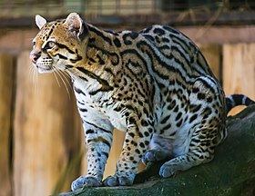
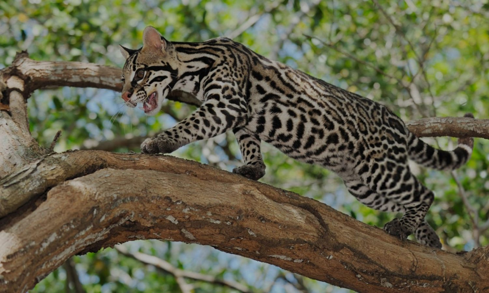
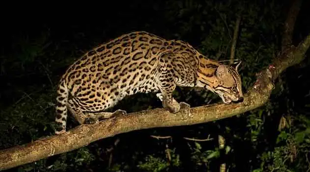
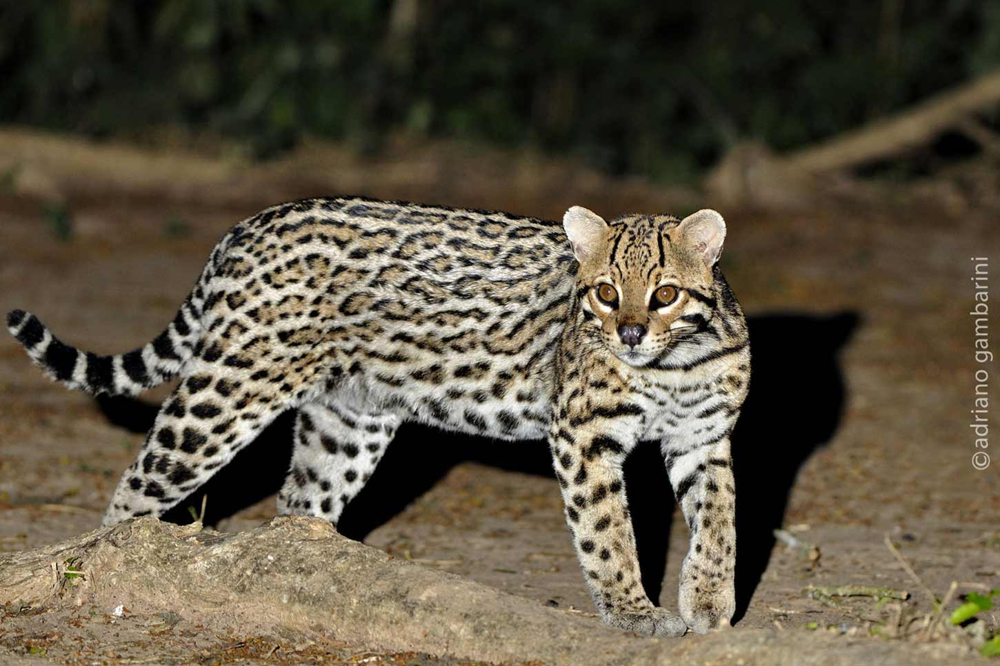
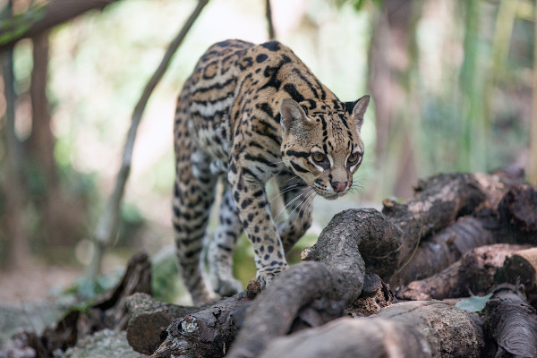
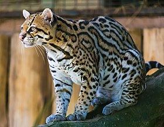
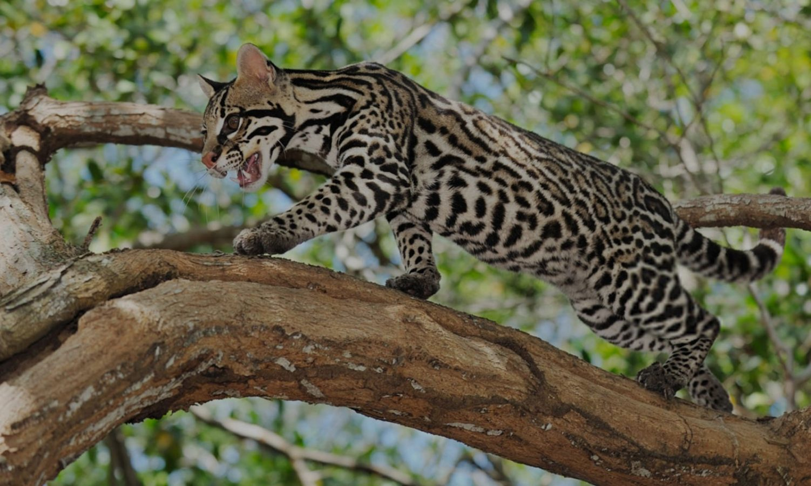
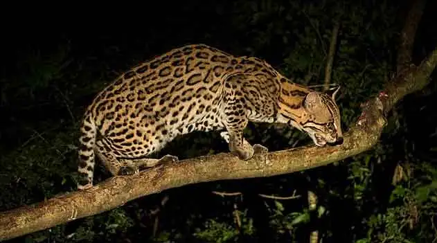
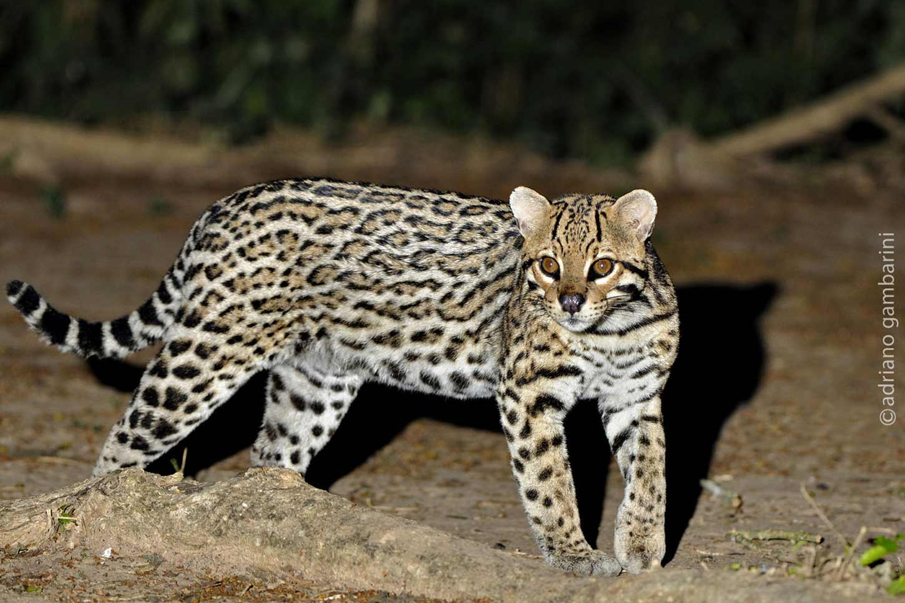
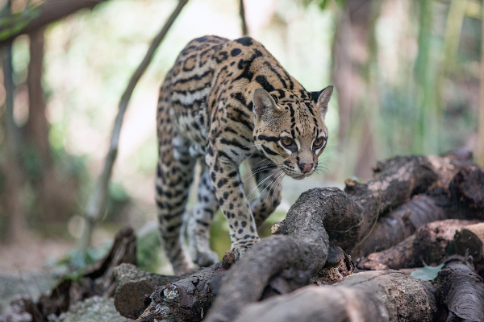

Nome Científico:Leopardus pardalis (Linnaeus, 1758)
Nomes Populares: Conhecida também como "jaguatirica", "onça-parda" e "leopardinho"
Classificação Biológica
Domínio: Eukaryota
Reino: Animalia
Filo: Chordata
Classe: Mammalia
Ordem: Carnivora
Família: Felidae
Gênero: Leopardus
Espécie: L. pardalis
Nutrição Geral e Hábitos Alimentares
Tipo de Nutrição: Heterotrófico
A jaguatirica é um carnívoro que se alimenta principalmente de pequenos a médios mamíferos, aves, répteis e ocasionalmente insetos. Sua dieta varia dependendo da disponibilidade de presas em seu habitat e pode incluir também peixes e anfíbios.
Morfologia
Pelagem e Corpo A pelagem da jaguatirica é geralmente dourada ou amarelada com manchas pretas em forma de rosetas. O corpo é robusto e musculoso, com pernas relativamente curtas em comparação com seu comprimento total. Possui uma cabeça proporcionalmente pequena com orelhas arredondadas e olhos grandes adaptados para visão noturna. Órgãos Respiratórios O aparelho respiratório da jaguatirica inclui narinas, fossas nasais, cavidade nasal, seios paranasais, faringe, laringe, traqueia e pulmões. Os pulmões são bem desenvolvidos e adaptados para uma vida ativa e predatória. Patas As patas possuem garras retráteis e são adaptadas para a locomoção ágil e silenciosa, essenciais para a caça e escalada.
Comportamento
A jaguatirica é um animal solitário e territorial. É mais ativa ao amanhecer e ao entardecer, embora também possa ser vista caçando durante a noite. São excelentes caçadoras e possuem um comportamento furtivo e discreto. Utilizam o ambiente de forma estratégica para emboscar suas presas e são conhecidas por suas habilidades de escalada.
Ocorrência
A jaguatirica é encontrada em diversas regiões da América Central e América do Sul, incluindo países como México, Brasil, Argentina, Paraguai e Uruguai. Prefere habitats de floresta tropical e subtropical, mas também pode ser encontrada em áreas de cerrado e matas secundárias.
Mapa de Ocorrência
Reprodução
Sistema de Acasalamento: A jaguatirica tem um sistema de acasalamento solitário, com encontros entre machos e fêmeas ocorrendo principalmente durante a época de reprodução. Reprodução ao Longo do Ano: A reprodução pode ocorrer durante o ano todo, com picos de atividade reprodutiva em certas épocas dependendo da região. Gestação: A gestação dura cerca de 70 a 90 dias. Ninhadas: As fêmeas geralmente dão à luz de dois a quatro filhotes por ninhada. Os filhotes nascem cegos e dependem da mãe para cuidados e alimentação até que estejam suficientemente desenvolvidos para sobreviver sozinhos.
 








